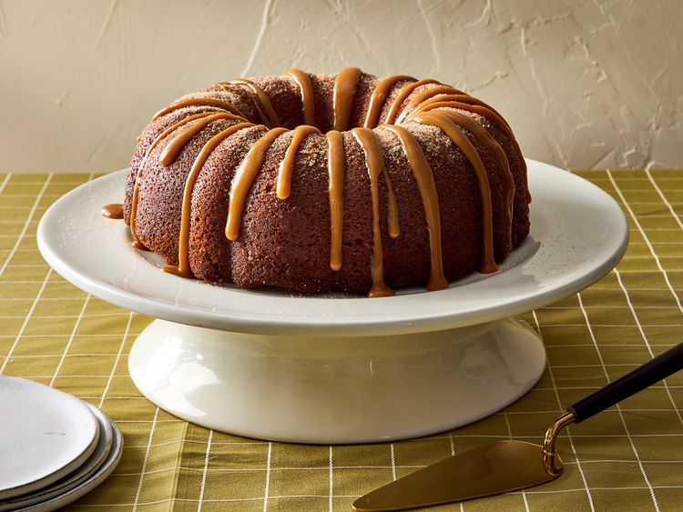

Churro Bundt Cake

Description
The churro bundt cake draws inspiration from the traditional Spanish and Mexican churro, a fried dough pastry rolled in cinnamon sugar, reimagined as a cake typically baked in a bundt pan for a delightful twist on the beloved treat.
This cinnamon-flavored churro Bundt cake is topped with dulce de leche— a truly stunning dessert.
Ingredients
- 1 cup salted butter, softened, plus more for the pan
- 2 1/2 cups all purpose flour, plus more for the pan
- 1 1/4 cups white sugar, divided
- 1/3 cup packed brown sugar
- 1 tablespoon vanilla extract
- 3 large eggs
- 2 large egg yolks
- 1 tablespoon baking powder
- 1/2 teaspoon salt
- 2 tablespoons plus 2 teaspoons ground cinnamon
- 1 cup milk
For topping (optional)
- 1/3 purchased dulce de leche
- 1 tablespoon milk
- 3 tablespoons butter
Steps
- Gather all ingredients.
- Preheat oven to 350 degrees F (175 degrees C). Grease with butter and flour a 10-inch fluted tube pan; set aside.
- Beat 1 cup softened butter in a large bowl with an electric mixer on medium for 30 seconds.
- Add 1 cup white sugar, brown sugar and vanilla; beat 4 to 5 minutes or until light and fluffy.
- Add eggs and egg yolks; beat for 1 minute.
- Whisk together flour, baking powder, salt and 2 tablespoons cinnamon in a separate bowl.
- Alternately add flour mixture and milk to butter mixture, beating on low speed after each addition just until combined, scraping sides of bowl as needed.
- Spoon batter into the prepared pan.
- Bake until a toothpick inserted in the center comes out clean, 45 to 50 minutes.
- Cool cake in pan on a wire rack for 10 minutes. Remove cake from pan and cool completely on wire rack.
- Mix together 1/4 cup white sugar and 2 teaspoons cinnamon topping in a bowl.
- Brush a small section of cake with 3 tablespoons melted butter and sprinkle with cinnamon sugar. Repeat with remaining sections until the cake is fully covered.
- For topping, if using. Mix dulce de leche and milk in a microwave safe bowl and microwave for 30 seconds or until mixture is of drizzling consistency.
- Drizzle over cooled cake.
Back to homepage